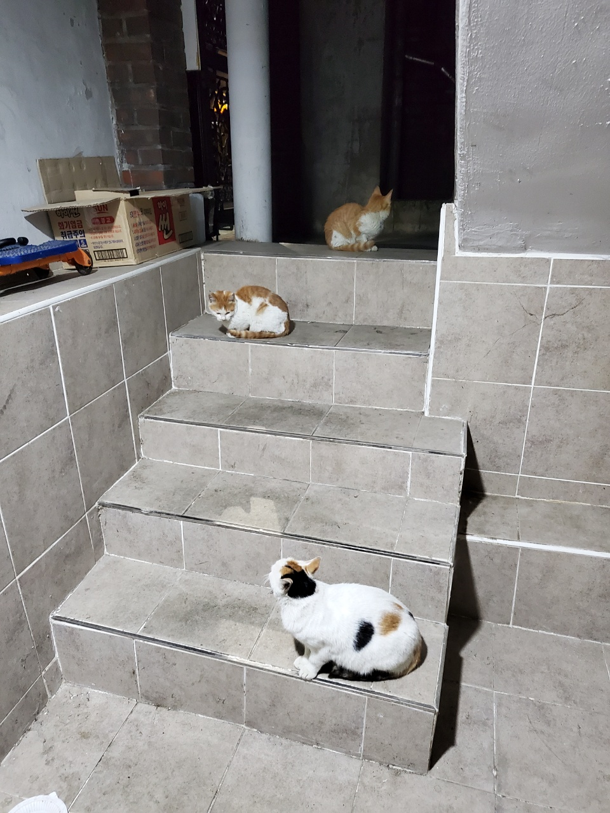
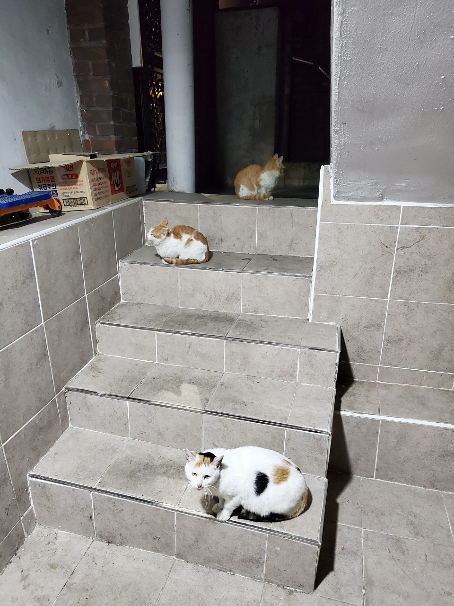
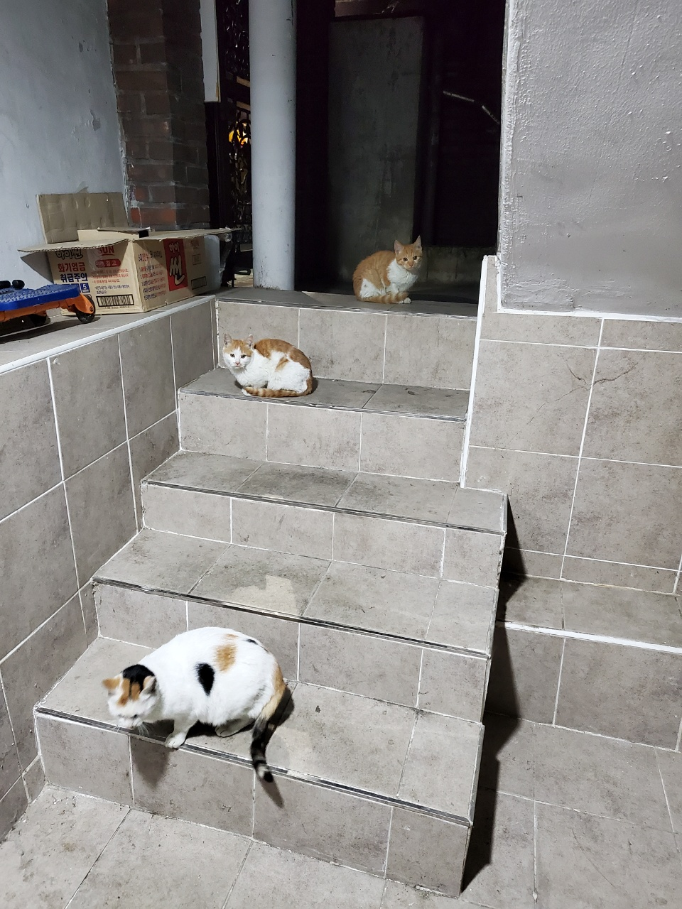
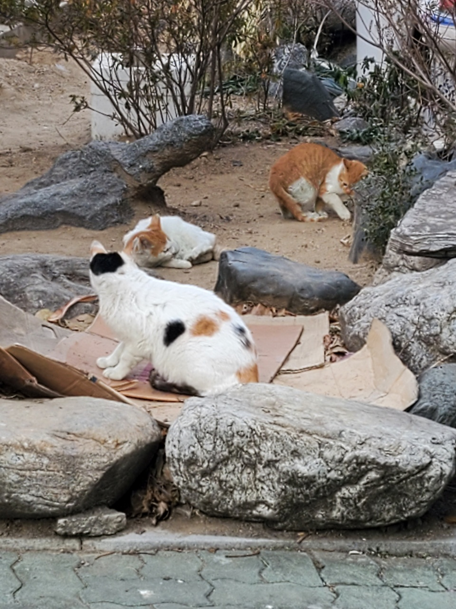
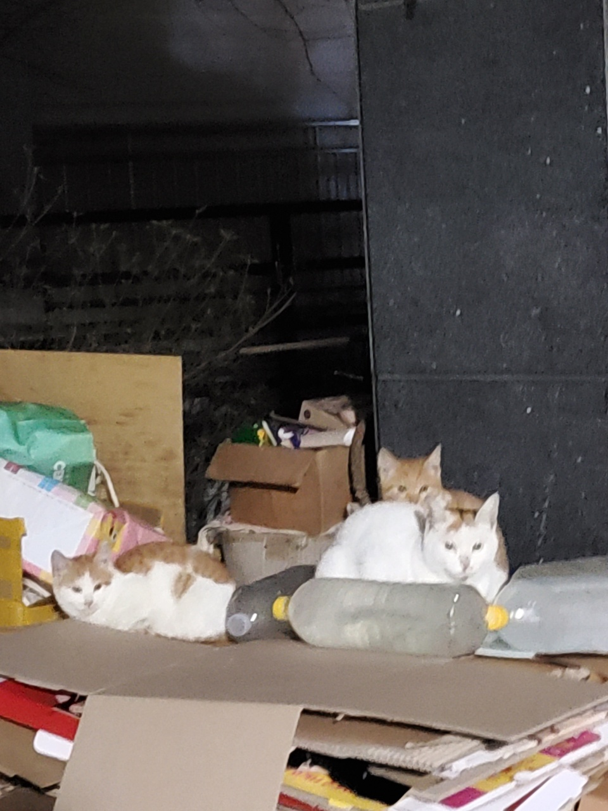

 
밥 때 항상 강인한 표정으로 앞에 나서는 모습...
촐랑이도 2년 여 전에는 태평이에게 보호받던 촐랑거리고 걱정없는 꼬맹이었는데 ... 어느 새 호동이 (-_-;;) 똑 닮은 새끼들을 낳고 근심걱정 가득한 엄마가 되었다.
물론 뛰어댕기는 아기들을 보면 너무 귀엽지만 언제 쟤들을 중성화 할 수 있을지 ... 나쁜 놈이 잡아가서 해코지하진 않을지 ... 똘추새끼가 밥에 약탄 거 먹진 않을지 넘 걱정됨 얘들아 암거나 줏어먹지마라
 
밥 안 먹을 때면 선봉장 mode 해제 ㅋㅋㅋㅋㅋ
그저 쳐다보면서 지켜주는 엄마 촐랑 ... 촐랑이 이제 이름을 바꿔야 하나 ... 더 이상 촐랑대지 않는다 ㅜ 담벼락에서 뛰어내리며 나를 놀래킨게 엊그제 같은데. .. 태평아 이색아 다들 어디서 지내니 ...
저 왼쪽 사진에 등장한 흙에 똥을 옴팡지게 싸놓나보더라 ㅋㅋㅋㅋㅋ 개꿀 앞집 할머니가 고민이라면서 털어놨는데 개꼬셧음 ㅎ
오른쪽 사진 역시 앞집할머니의 박스창고인데 ... 저때 한창 추운 때라 박스 날아가지 말라고 얹어놓은 물병도 꽝꽝 얼었을 때다. 애기들 추워서 밥이라도 많이 먹어라고 밥 엄청 줬었는데 그래도 잘 견뎌줘서 다행이다.